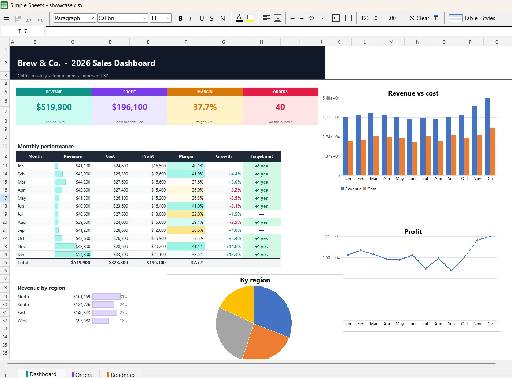
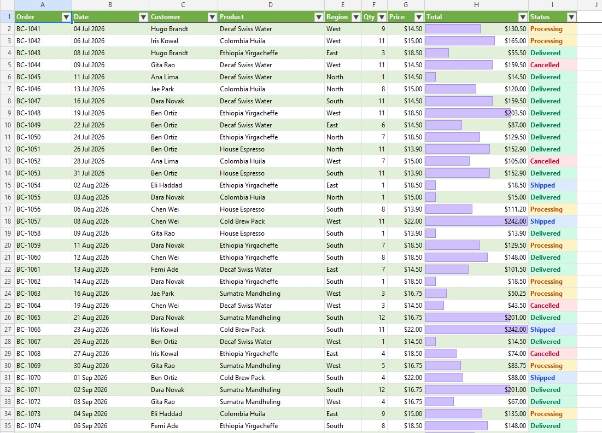
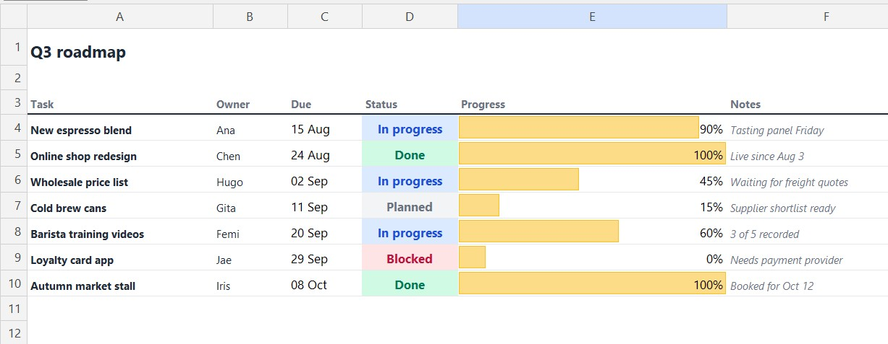

Simple Sheets 2.0 is a fast, lightweight spreadsheet editor for Windows. It opens Excel, OpenDocument and CSV files in a blink, feels like the tools you already know, and saves your files without wrecking their formatting.

Most of the time you don't need a full office suite. You need to open a file someone sent you, check a few numbers, fix a typo and send it back. Waiting for a heavyweight suite to load, or uploading the file to someone's cloud, feels like starting a truck to cross the street.
Lightweight alternatives have the opposite problem: they open fast, but when you save, the file comes back different. Colours gone, charts missing, column widths reset.
Simple Sheets makes one promise: open instantly, edit comfortably, and give the file back the way you found it, plus your changes.
When it saves, Simple Sheets changes only what you changed. Fonts, fills, borders, number formats, conditional formatting, charts, pictures, shapes, comments, pivot tables, sheet protection and workbook passwords all survive the round trip. If a file contains something it can't keep, it tells you before saving, not after.

Formula bar, fill handle, Ctrl+A to select your data, right-click to insert rows, sheet tabs at the bottom and Ctrl+Z for everything. Plus a few extras: a command palette (Ctrl+Shift+P) to run any command by typing its name, flash fill (Ctrl+E), step-by-step formula evaluation, and several workbooks in tabs.

Dark mode, a high-contrast theme, an adjustable interface size and a colour-blind-safe chart palette. Everything works from the keyboard. The interface is available in English, Bahasa Indonesia and Español, and you can add your own language with a small file.
One 20 MB program. It installs without administrator rights, or runs from any folder or USB stick in portable mode. No accounts, no telemetry, nothing uploaded. Optional updates are checked against their SHA-256 checksum before they run. For IT departments, the installer runs silently with /S.
The installer isn't code-signed yet, so Windows may show a SmartScreen notice the first time. Excel slicers aren't kept on save yet (you'll get a warning). The Linux and macOS builds are still experimental, and screen-reader support is on the roadmap.
Simple Sheets 2.0 is out now. Fast to open, familiar to use, kind to your files.